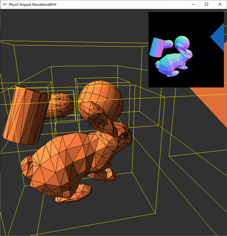
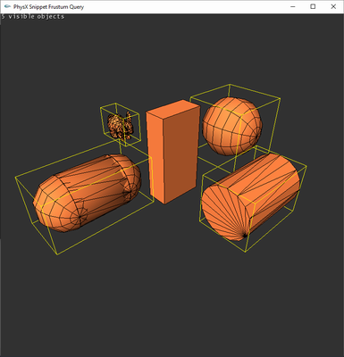
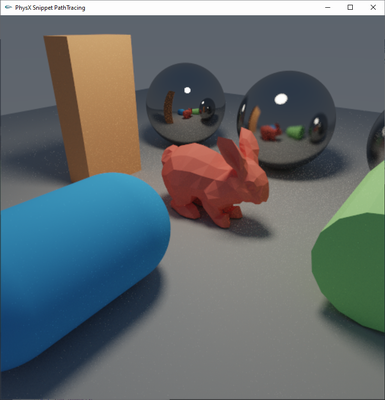
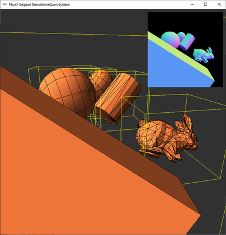
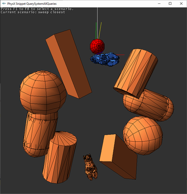
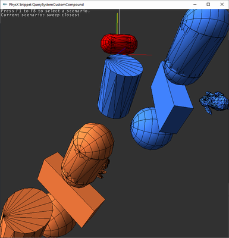

Scene Queries¶
Introduction¶
PhysX provides methods in PxScene to perform collision queries against actors and attached shapes in the scene. There are three types of queries: raycasts, sweeps and overlaps, and each can return either a single result, or multiple results. Broadly speaking, each query traverses a culling structure (a.k.a. pruning structure) containing the scene objects, performs a precise test using the GeometryQuery functions (see Geometry Queries), and accumulates the results. Filtering may occur before or after precise testing.
The scene uses two different query structures, one for PxRigidStatic actors, and the other for PxRigidBody actors (PxRigidDynamic and PxArticulationLink). The two structures may be configured to use different culling implementations depending on the desired speed/space characteristics (see PxPruningStructureType).
Basic queries¶
Raycasts¶
A PxScene::raycast() query intersects a user-defined ray with the whole scene. The simplest use case for a raycast() query is to find the closest hit along a given ray as follows:
PxScene* scene;
PxVec3 origin = ...; // [in] Ray origin
PxVec3 unitDir = ...; // [in] Normalized ray direction
PxReal maxDistance = ...; // [in] Raycast max distance
PxRaycastBuffer hit; // [out] Raycast results
// Raycast against all static & dynamic objects (no filtering)
// The main result from this call is the closest hit, stored in the 'hit.block' structure
bool status = scene->raycast(origin, unitDir, maxDistance, hit);
if (status)
applyDamage(hit.block.position, hit.block.normal);
In this code snippet a PxRaycastBuffer object is used to receive results from the raycast query. A call to raycast() returns true if there was a hit. hit.hadBlock is also set to true if there was a hit. The distance for raycasts has to be in the [0, inf) range.
Raycasts results include position, normal, hit distance, shape and actor, and a face index with UV coordinates for triangle meshes and heightfields. Before using the query results check PxHitFlag::ePOSITION, eNORMAL, eUV flags first, to ensure the corresponding data is available. For example the computation of impact position & normal can be skipped if they are not needed. The user-provided PxHitFlags control what gets computed during queries.
Sweeps¶
A PxScene::sweep() query is geometrically similar to a raycast(): a PxGeometry shape is swept from a specified initial pose in a direction unitDir with specified maximum length, to find the points of impacts of the geometry with scene objects. The maximum distance for sweeps has to be in the [0, inf) range, and will be clamped by to PX_MAX_SWEEP_DISTANCE, defined in file PxGeometryQuery.h.
Allowed shapes are box, sphere, capsule and convex.
A PxSweepBuffer object is used to receive results from sweep() queries:
PxSweepBuffer hit; // [out] Sweep results
PxGeometry sweepShape = ...; // [in] swept shape
PxTransform initialPose = ...; // [in] initial shape pose (at distance=0)
PxVec3 sweepDirection = ...; // [in] normalized sweep direction
bool status = scene->sweep(sweepShape, initialPose, sweepDirection, sweepDistance, hit);
Sweeps results include position, normal, hit distance, shape and actor, and a face index for triangle meshes and heightfields. This is again controlled by the PxHitFlags passed to the query.
Overlaps¶
A PxScene::overlap() query searches a region enclosed by a specified shape for any overlapping objects in the scene. The region is specified as a transformed box, sphere, capsule or convex geometry.
A PxOverlapBuffer object is used to receive results from overlap() queries:
PxOverlapBuffer hit; // [out] Overlap results
PxGeometry overlapShape = ...; // [in] shape to test for overlaps
PxTransform shapePose = ...; // [in] initial shape pose (at distance=0)
PxOverlapBuffer hit;
bool status = scene->overlap(overlapShape, shapePose, hit);
Overlaps results only include actor/shape and faceIndex since there is no single point of intersection.
Touching and blocking hits¶
For queries with multiple results we distinguish between touching and blocking hits. The choice of whether a hit is touching or blocking is made by the user-implemented filtering logic. Intuitively a blocking hit prevents further progress of a raycast or a sweep along its path, and a touching hit is recorded but allows the ray or sweep to continue. So a multiple-hit query will return the closest blocking hit if one exists, together with any touching hits that are closer. If there are no blocking hits, all touching hits will be returned.
See the Filtering section for details.
Query modes¶
Closest hit¶
The default mode of operation for all three query types is "closest hit". The query looks for all blocking hits, picks the one with the minimum distance and reports it in the PxHitBuffer::block member.
- For overlap() queries an arbitrary blocking hit is chosen as the reported blocking hit (distance is treated as zero for all overlap() hits).
Any hit¶
All three query types can operate in "any hit" mode. This is a performance hint to the query system indicating that there is no need to look for the closest hit - any hit encountered will do. This mode is most often used for boolean blocking/non-blocking queries. With this flag the code can early-exit from a query as soon as a single hit is found, sometimes providing significant performance improvements. To activate this mode use PxQueryFlag::eANY_HIT filter data flag and set it in PxQueryFilterData object, for instance:
PxQueryFilterData fd;
fd.flags |= PxQueryFlag::eANY_HIT; // note the OR with the default value
bool status = scene->raycast(origin, unitDir, maxDistance, hit,
PxHitFlags(PxHitFlag::eDEFAULT), fdAny);
Multiple hits¶
All three query types (raycast, overlap, sweep) can also report multiple hits with objects in the scene.
- To activate this mode for raycasts use the PxRaycastBuffer constructor with user provided buffer for touching hits.
- In this mode all hits default to 'touching' type and are recorded in the PxRaycastBuffer::touches array.
For instance:
PxScene* scene;
PxVec3 origin = ...; // [in] Ray origin
PxVec3 unitDir = ...; // [in] Normalized ray direction
PxReal maxDistance = ...; // [in] Raycast max distance
const PxU32 bufferSize = 256; // [in] size of 'hitBuffer'
PxRaycastHit hitBuffer[bufferSize]; // [out] User provided buffer for results
PxRaycastBuffer buf(hitBuffer, bufferSize); // [out] Blocking and touching hits stored here
// Raycast against all static & dynamic objects (no filtering)
// The main result from this call are all hits along the ray, stored in 'hitBuffer'
scene->raycast(origin, unitDir, maxDistance, buf);
for (PxU32 i = 0; i < buf.nbTouches; i++)
animateLeaves(buf.touches[i]);
The same mechanism is used for overlaps (use PxOverlapBuffer with PxOverlapHit[]) and sweeps (PxSweepBuffer with PxSweepHit[]).
Multiple hits with blocking hit¶
In the snippet for multiple hits above we only expected touching hits. If a blocking hit was encountered along with touching hits, it will be reported in PxHitBuffer::block member, and the touch buffer will contain only touching hits which are closer. This combination is useful in scenarios such as bullets going through windows (breaking them on their way) or leaves of a tree (making them rustle) until they hit a blocking object (a concrete wall):
// same initialization code as in the snippet for multiple hits
bool hadBlockingHit = scene->raycast(origin, unitDir, maxDistance, buf);
if (hadBlockingHit)
drawWallDecal(buf.block);
for (PxU32 i = 0; i < buf.nbTouches; i++)
{
assert(buf.touches[i].distance <= buf.block.distance);
animateLeaves(buf.touches[i]);
}
- By default, hits are assumed to be touching when a touch buffer is provided, and the filter callback should return PxQueryHitType::eBLOCK to denote that a hit is blocking. See Filtering for details.
- For overlap() queries all touching hits will be recorded even if a blocking hit was encountered and PxQueryFlag::eNO_BLOCK flag is set.
Filtering¶
Filtering controls how shapes are excluded from scene query results and how results are reported. All three query types support the following filtering parameters:
- a PxQueryFilterData structure, containing both PxQueryFlags and PxFilterData
- an optional PxQueryFilterCallback
PxQueryFlag::eSTATIC, PxQueryFlag::eDYNAMIC¶
PxQueryFlag::eSTATIC and PxQueryFlag::eDYNAMIC flags control whether the query should include shapes from the static and/or dynamic query structures. This is the most efficient way to filter out all static/dynamic shapes. For example an explosion effect that applies forces to all dynamics in a region could use a spherical overlap query, and only the PxQueryFlag::eDYNAMIC flag to exclude all statics since forces cannot be applied to static objects. By default both statics and dynamics are included in query results.
For instance:
PxScene* scene;
PxVec3 origin = ...; // [in] Ray origin
PxVec3 unitDir = ...; // [in] Normalized ray direction
PxReal maxDistance = ...; // [in] Raycast max distance
PxRaycastBuffer hit; // [out] Raycast results
// [in] Define filter for static objects only
PxQueryFilterData filterData(PxQueryFlag::eSTATIC);
// Raycast against static objects only
// The main result from this call is the boolean 'status'
bool status = scene->raycast(origin, unitDir, maxDistance, hit, PxHitFlag::eDEFAULT, filterData);
PxQueryFlag::ePREFILTER, PxQueryFlag::ePOSTFILTER¶
Scene queries are performed in three phases: broad phase, midphase and narrow phase.
- Broad phase traverses the global scene spatial partitioning structures to find the candidates for mid and narrow phases.
- midphase traverses the triangle mesh and heightfield internal culling structures, to find a smaller subset of the triangles in a mesh reported by the broad phase.
- Narrow phase performs exact intersection tests (ray test for raycast() queries, and exact sweep shape tests or overlap tests for sweep() and overlap() queries).
To implement custom filtering in queries, set the PxQueryFlag::ePREFILTER and/or PxQueryFlag::ePOSTFILTER flags and subclass PxQueryFilterCallback with the required filtering logic.
- Pre-filtering happens before midphase and narrow phase and allows shapes to be efficiently discarded before the potentially expensive exact collision test. These tests are more expensive for triangle meshes, heightfields, convexes and most sweeps than raycast and overlap tests involving only simple shapes (such as spheres, capsules and boxes.)
- Post-filtering happens after the narrow phase test and can therefore use the results of the test (such as PxRaycastHit.position) to determine whether a hit should be discarded or not. These results can be accessed via the hit input argument to the post-filtering callback (PxQueryFilterCallback::postFilter). Use e.g. static_cast<PxRaycastHit&>(hit), access data specific to a raycast query, and similarly for overlaps (PxOverlapHit) and sweeps (PxSweepHit).
The implementation of a filtering callback returns a PxQueryHitType result.
- eNONE indicates that the hit should be discarded.
- eBLOCK indicates that the hit is blocking.
- eTOUCH indicates that the hit is touching.
Whenever a raycast(), sweep() or overlap() query was called with non-zero PxHitCallback::nbTouches and PxHitCallback::touches parameters, eTOUCH type hits that are no further (touchDistance <= blockDistance) than the closest eBLOCK type hit, will be reported. For example, to record all hits from a raycast query, always return eTOUCH.
Note
Returning eTOUCH from a filter callback requires the hit buffer query parameter to have a non-zero ::touches array, otherwise PhysX will generate an error in checked builds and discard any touching hits.
Note
eBLOCK should not be returned from user filters for overlap(). Doing so will result in undefined behavior, and a warning will be issued. If the PxQueryFlag::eNO_BLOCK flag is set, the eBLOCK will instead be automatically converted to an eTOUCH and the warning suppressed.
PxQueryFlag::eANY_HIT¶
Use this flag to force the query to report the first encountered hit (which may not be the closest) as a blocking hit. Best performance gains can be expected for long raycasts/sweeps with a nearby intersecting object, or overlaps with multiple intersecting objects.
- Also see PxHitFlag::eMESH_ANY (now PxHitFlag::eANY_HIT).
PxQueryFlag::eNO_BLOCK¶
Use this flag when you want to override the eBLOCK value returned from filters to eTOUCH or in cases when no blocking hits are expected (in this case this flag serves as a performance hint). All hits will then be reported as touching regardless of the filter callback return value. The hit callback/buffer object provided to the query is required to have a non-zero PxHitBuffer::touches buffer when this flag is used. Significant performance gains should only be expected for scenarios where the touching hit buffer overflows.
Note
this flag overrides the return value from pre and post-filter functions, so hits that were previously returned as blocking will instead be returned as touching.
PxFilterData fixed function filtering¶
A fast, fixed-function filter is provided by PxFilterData, a 4*32-bit bitmask used by the built-in filtering equation. Each shape has a bitmask (set via PxShape::setQueryFilterData()), and the query also has a bitmask.
The query data is used differently by batched and unbatched queries (see below for batched queries). For unbatched queries, the following rules are applied:
- If the query's bitmask is all zeroes, custom filtering and intersection testing proceed as normal.
- Otherwise, if the bitwise-AND value of the query's bitmask and the shape's bitmask is zero, the shape is skipped
Or in other words:
PxU32 keep = (query.word0 & object.word0)
| (query.word1 & object.word1)
| (query.word2 & object.word2)
| (query.word3 & object.word3);
This hardcoded equation can provide simple filtering while avoiding the function call overhead of the filtering callback. For example, to emulate the behavior of PhysX 2 active groups, define the groups as follows:
enum ActiveGroup
{
GROUP1 = (1<<0),
GROUP2 = (1<<1),
GROUP3 = (1<<2),
GROUP4 = (1<<3),
...
};
When shapes are created, they can be assigned to the a group, for example GROUP1:
PxShape* shape; // Previously created shape
PxFilterData filterData;
filterData.word0 = GROUP1;
shape->setQueryFilterData(filterData);
Or to multiple groups, for example GROUP1 and GROUP3:
PxShape* shape; // Previously created shape
PxFilterData filterData;
filterData.word0 = GROUP1|GROUP3;
shape->setQueryFilterData(filterData);
When performing a scene query, select which groups are active for the query - for example GROUP2 and GROUP3 - as follows:
PxScene* scene;
PxVec3 origin = ...; // [in] Ray origin
PxVec3 unitDir = ...; // [in] Normalized ray direction
PxReal maxDistance = ...; // [in] Raycast max distance
PxRaycastBuffer hit; // [out] Raycast results
// [in] Define what parts of PxRaycastHit we're interested in
const PxHitFlags outputFlags = PxHitFlag::ePOSITION | PxHitFlag::eNORMAL;
// [in] Raycast against GROUP2 and GROUP3
PxQueryFilterData filterData = PxQueryFilterData();
filterData.data.word0 = GROUP2|GROUP3;
bool status = scene->raycast(origin, unitDir, maxDistance, hit, outputFlags, filterData);
User defined hit callbacks for unbounded results¶
Queries can sometimes return a very large number of results (for example, queries with very large objects or in areas with high object density), and it can be prohibitively expensive to reserve a sufficiently large memory buffer. The classes PxRaycastCallback, PxSweepCallback and PxOverlapCallback provide efficient callback based solutions for such scenarios. For instance a raycast query with a PxRaycastCallback callback will return all touch hits via multiple virtual PxHitCallback::processTouches() calls:
struct UserCallback : PxRaycastCallback
{
UserData data;
virtual PxAgain processTouches(const PxRaycastHit* buffer, PxU32 nbHits)
// This callback can be issued multiple times and can be used
// to process an unbounded number of touching hits.
// Each reported touching hit in buffer is guaranteed to be closer than
// the final block hit after the query has fully executed.
{
for (PxU32 i = 0; i < nbHits; i++)
animateLeaves(buffer[i], data);
}
virtual void finalizeQuery()
{
drawWallDecal(this->block, data);
}
};
PxScene* scene;
PxVec3 origin = ...; // [in] Ray origin
PxVec3 unitDir = ...; // [in] Normalized ray direction
PxReal maxDistance = ...; // [in] Raycast max distance
UserCallback cb; cb.data = ...;
scene->raycast(origin, unitDir, maxDistance, cb); // see UserCallback::processTouches
In this code snippet the raycast() query will potentially invoke processTouches multiple times, with all touching hits already clipped to the globally nearest blocking hit.
- Note that the query can be up to twice as expensive in case all eTOUCH results do not fit in the provided touches buffer and a blocking hit was also found.
- Also see PxQueryFlag::eNO_BLOCK
Batched queries¶
PhysX supports batching of scene queries via the PxBatchQueryExt interface. This can be found in the extensions layer.
Using this API may simplify multi-threaded implementations.
- PxBatchQueryExt interface facilitates batching and execution of multiple queries together. PxBatchQueryExt buffers raycast, overlap and sweep queries until PxBatchQueryExt::execute() is called.
- Use PxCreateBatchQueryExt() to create a PxBatchQueryExt object. There are two versions of this function. One takes user-provided arrays to store the results and touch data, while the other will allocate arrays for the result and touch data, as specified in the function arguments.
- The hardcoded filtering equation is not used for batched queries.
- Each of the query functions of PxBatchQueryExt returns a pointer to PxRaycastBuffer/PxSweepBuffer/PxOverlapBuffer as appropriate. PxBatchQueryExt consumes the corresponding buffers in the order the queries are called. If the corresponding buffers are not large enough then a null pointer will be returned and an error issued to the error stream.
- The function PxBatchQueryStatus::getStatus() can be used to determine if the allocated or provided touch buffer was insufficiently large to record all touches resulting from the batch of queries.
Single Object Caching¶
A special case mechanism for accelerating scene queries is single-object caching, using PxQueryCache.
- This cache can provide additional speedups and memory savings for queries in any operation mode.
- The cache object defines which shape should be tested first. For queries with high temporal coherence, this can provide significant performance gains. A good strategy to capture that coherence is simply to fill the cache object of a given query with the eBLOCK result (last blocking shape) from the previous frame.
- Note that it is likely incorrect to use a past touching hit (recorded with eTOUCH flag) for caching since it will be interpreted as blocking and override any filtering.
For example there is a good chance that an AI visibility query will return the same line-of-sight blocking shape for several frames. Using a raycast query with a properly filled PxQueryCache object will allow PhysX to test a single shape - before traversing the internal spatial partitioning structures, and in case of a "cache hit" the traversal can be bypassed entirely. For instance:
PxScene* scene;
PxVec3 origin = ...; // [in] Ray origin
PxVec3 unitDir = ...; // [in] Normalized ray direction
PxReal maxDistance = ...; // [in] Raycast max distance
PxRaycastBuffer hit; // [out] Raycast results
// Per-raycast persistent cache, valid from one frame to the next
static PxQueryCache persistentCache;
// Define cache for current frame:
// - if there was a hit in the previous frame, use the cache.
// - otherwise do not (PhysX requires given cache has a valid shape pointer)
const PxQueryCache* cache = persistentCache.shape ? &persistentCache : NULL;
// Perform a raycast query using the cache
const bool status = scene->raycast(origin, unitDir, maxDistance, hit,
PxHitFlags(PxHitFlag::eDEFAULT),
PxQueryFilterData(), NULL, cache);
if(status)
{
// We hit a shape. Cache it for next frame.
persistentCache.shape = hit.block.shape;
persistentCache.faceIndex = hit.block.faceIndex;
}
else
{
// We did not hit anything. Reset the cache for next frame.
persistentCache = PxQueryCache();
}
Caching can also be useful in queries looking for the closest blocking hit or when using the eANY_HIT flag. In this case, testing the previously closest object first can allow PhysX to shorten the query distance very early, leading to fewer total narrow phase collision tests and early out from the traversal.
Note
PhysX does not detect stale pointers, so the application is responsible for cached object validity when shapes are deleted.
PxPruningStructureType¶
PhysX SDK offers different pruning structures which are used to accelerate the scene queries. This paragraph describes the differences between them.
Generalities¶
The Scene Query system uses two different acceleration structures, a hierarchical grid and an AABB tree.
The grid builds quickly, in O(n) time, with queries executing in between O(1) and O(N) time depending on how uniformly the objects are distributed in space, with pathological worst case performance of O(N) when all objects are clustered in the same grid cell.
The tree builds in O(n log(n)) time, but queries with a single result typically run in O(log(n)) time. Queries returning multiple results will traverse more of the tree, the worst case being a query returning all of the objects in the scene in O(n) time. The tree is vulnerable to degeneration when the same topology is maintained too long as object positions change, and in pathological cases query performance may degrade to O(n) time.
Acceleration structures must be continually modified in accordance with objects being added or removed, or object AABB updates due to changes in position or geometry. To minimize the cost, modifications are deferred for as long as possible. Thus adding or removing objects or updating AABBs occurs in amortized constant time, with the cost of modifications deferred until the changes 'commit'. This happens on the next subsequent query or the next fetchResults() or the next fetchQueries(). To force an immediate commit, call the PxScene::flushQueryUpdates() function.
The exact details of the commit process depend on the values of staticStructure and dynamicStructure specified in PxSceneDesc.
To avoid automatic resizing triggered by insertions into internal scene query data structures, reserve the space in advance. See PxSceneDesc::maxNbStaticShapes and PxSceneDesc::maxNbDynamicShapes.
PxPruningStructureType::eNONE¶
The acceleration structure is similar to a hierarchical grid. Committing changes requires a full rebuild. This is a good choice if you expect to rarely or never update the objects in this structure.
PxPruningStructureType::eSTATIC_AABB_TREE¶
The acceleration structure is a tree. Committing changes requires a full rebuild. It is not generally recommended, but can be a good choice for staticStructure if the static actors in your scene are created on initialization, and not modified thereafter. If you frequently add or remove static geometry, the default eDYNAMIC_AABB_TREE setting is usually a better choice, although it has a higher memory footprint than that of eSTATIC_AABB_TREE.
PxPruningStructureType::eDYNAMIC_AABB_TREE¶
In this case, both a main tree and a secondary pruning structure are used, and each query searches both the tree and the secondary pruner.
The main tree is initially built by the first commit. Once a tree is built, committing changes proceeds as follows:
- the tree is refitted in accordance with updates and removals of object it contains.
- added objects are inserted into the secondary pruner. Such additions, but also removals, or changes to objects in the secondary pruner, only cause updates to this structure (not to the main tree). The nature of these updates depends on which implementation is used for the secondary pruner. This can be defined by the PxDynamicTreeSecondaryPruner enum in PxSceneDesc::dynamicTreeSecondaryPruner. (See details below).
In addition, a new tree is incrementally built during fetchResults(), over a number of frames controlled by PxScene's dynamicTreeRebuildRateHint attribute. When the build starts, it includes all of the objects in the current tree and secondary pruner. When it finishes, some frames later, the new tree is refitted in accordance with any AABB changes or removals since the build started, and then replaces the current tree. Any objects that were added since the start of the build remain in the secondary pruner.
To force a full immediate rebuild, call PxScene::forceDynamicTreeRebuild(). This can be useful in cases such as the following:
- a slow rebuilt rate is typically desirable, but occasionally a large number of object additions creates high occupancy in the secondary pruner.
- you are moving many objects across large distances, since refitting may significantly degrade the quality of the current tree.
PxDynamicTreeSecondaryPruner¶
As mentioned in the previous paragraph, this enum controls which implementation is used for the secondary pruner of dynamic trees. This secondary pruner manages newly added objects, typically while the main scene tree is rebuilt over a number of frames.
PxDynamicTreeSecondaryPruner::eNONE¶
This tells the system to ignore scene queries for newly added objects. It means that for a number of frames after insertion into the scene, (until the main scene tree is rebuilt), these objects will not be visible to scene queries. This can be acceptable in large streaming worlds where objects streamed in are located at the limits of the world, and it can be fine for these objects to not participate in scene queries immediately (it would be the same as streaming them in some frames later). The benefits is that no CPU time is spent on managing these new objects, so insertion & query costs are small.
PxDynamicTreeSecondaryPruner::eBUCKET¶
This uses a grid similar to the one used for the main pruner with PxPruningStructureType::eNONE. Insertions are cheap but query cost can be high if a lot of objects end up in the grid - especially if insertions are localized and a lot of objects end up in the same grid cell. This was the default structure for secondary pruner in PhysX 3.
PxDynamicTreeSecondaryPruner::eINCREMENTAL¶
This uses an incremental AABB-tree, with no direct PxPruningStructureType equivalent. Queries are fast, but insertion cost can be high. This was the default structure for secondary pruner in PhysX 4, and it is also the default choice in PhysX 5.
PxDynamicTreeSecondaryPruner::eBVH¶
This uses a PxBVH structure for the secondary pruner (see below). This is an AABB-tree with support for refit operations, tweaked for fast build performance and reasonable query performance. This new implementation generally offers the best overall performance. However it is not as efficient as PxDynamicTreeSecondaryPruner::eINCREMENTAL for important edge cases in which a scene query immediately follows the insertion of one or a few objects into the scene. This would be the case for example when a raycast or a sweep is used to position each newly spawned object in the scene.
BVH build settings¶
Since PhysX 5.1, users can tweak & refine the build strategy and the number of objects per node for PxPruningStructureType::eSTATIC_AABB_TREE and PxPruningStructureType::eDYNAMIC_AABB_TREE structures. The corresponding parameters are PxSceneDesc::staticBVHBuildStrategy and PxSceneDesc::staticNbObjectsPerNode for the static structure (PxSceneQueryDesc::staticStructure), and PxSceneDesc::dynamicBVHBuildStrategy and PxSceneDesc::dynamicNbObjectsPerNode for the dynamic structure (PxSceneQueryDesc::dynamicStructure).
There are three available build strategies. PxBVHBuildStrategy::eFAST provides the fastest builds. PxBVHBuildStrategy::eDEFAULT is the default mode for internal midphase structures: it is a good middle-ground between build performance and query performance. Then PxBVHBuildStrategy::eSAH provides the best trees in terms of query performance, but they can be significantly more costly to build. Because objects are constantly moving in these scene-level trees, i.e. these trees will be constantly rebuilt at runtime, it is usually better to focus on build performance rather than absolute best build quality. Thus, the default mode here is PxBVHBuildStrategy::eFAST. (The midphase structures for triangle meshes are usually purely static and never updated, so they use PxBVHBuildStrategy::eDEFAULT instead).
The number of objects per node is another parameter that can affect build and runtime performance. Increasing that number means that each BVH leaf node will contains more objects, i.e. a query against a leaf node will potentially take more time, as the code will query each of the leaf objects sequentially. On the other hand, the tree will take less memory, it will be faster to build, and because it contains less internal nodes overall it will also be faster to refit, potentially reducing CPU-time spikes. The default value is 4 objects per node to be consistent with previous PhysX versions, but it is not unreasonable to increase this number up to 15.
PxSceneQueryUpdateMode¶
It is possible to define what scene query related work is done during PxScene::fetchResults.
By default fetchResults will sync changed bounds during simulation and update the scene query bounds in pruners, this work is mandatory. Other work can be optional, based on the PxSceneQueryUpdateMode:
- eBUILD_ENABLED_COMMIT_ENABLED does allow to execute the new AABB tree build step during fetchResults, additionally the pruner commit is called where any changes are applied. During commit PhysX refits the dynamic scene query tree and if a new tree was built and the build finished the tree is swapped with current AABB tree.
- eBUILD_ENABLED_COMMIT_DISABLED does allow to execute the new AABB tree build step during fetchResults. Pruner commit is not called, this means that refit will then occur during the first scene query following fetchResults, or may be forced by the method PxScene::flushSceneQueryUpdates().
- eBUILD_DISABLED_COMMIT_DISABLED no further scene query work is executed. The scene queries update needs to be called manually, see PxScene::sceneQueriesUpdate. It is recommended to call PxScene::sceneQueriesUpdate right after fetchResults as the pruning structures are not updated.
PxPruningStructure¶
Provides access to precomputed pruning structure used to accelerate scene queries against newly added actors.
A pruning structure can be provided to PxScene::addActors. The actors scene query shapes will then be directly merged into the scenes AABB tree, without the need of an AABB tree recompute:
// Create pruning structure from given actors.
PxPruningStructure* ps = PxPhysics::createPruningStructure(&actors[0], (PxU32)actors.size());
// Add actors into a scene together with the precomputed pruning structure.
PxScene::addActors(*ps);
ps->release();
A PxPruningStructure object can be serialized into a collection together with its actors.
For usage of PxPruningStructure please refer to the snippet SnippetPrunerSerialization.
A typical use case for PxPruningStructure is a large world scenario where blocks of closely positioned actors get streamed in.
Merge process¶
The merge process into the scene query acceleration structure differs based on PxPruningStructureType:
- eSTATIC_AABB_TREE - the pruning structure is merged directly into scene's AABBtree. This might unbalance the tree and it is recommended to recompute the static tree at some point.
- eDYNAMIC_AABB_TREE - the pruning structure is merged into a temporary pruning structures until the scene's new optimized AABB tree is computed.
PxBVH¶
Modifies the default behavior of scene queries. By default scene queries are shape centric, which means each shape is represented as an object in a scene query pruner. A PxBVH does tell the SDK to set actor centric behavior for that given actor.
If a PxBVH is provided during PxScene::addActor, that actor's bounds are stored in a separate internal pruning structure known as a "compound pruner" - instead of adding each of the actor's shapes to the regular static & dynamic pruning structures. When a scene query against such an actor is done it does first query the actors bounds and then makes a local query against the shapes using the provided BVH structure data (note that the PxBVH data are copied to the SDK and are not required during runtime).
How to create PxBVH¶
PxBVH can be created through the PxCooking library. It takes the provided PxBounds3 and computes a BVH. This is stored within the PxBVH and used later.
Example:
// get the bounds from the actor, this can be done through a helper function in PhysX extensions
PxU32 numBounds = 0;
PxBounds3* bounds = PxRigidActorExt::getRigidActorShapeLocalBoundsList(*body, numBounds);
// setup the PxBVHDesc, it does contain only the PxBounds3 data
PxBVHDesc bvhDesc;
bvhDesc.bounds.count = numBounds;
bvhDesc.bounds.data = bounds;
bvhDesc.bounds.stride = sizeof(PxBounds3);
// cook the bvh
PxBVH* bvh = gCooking->createBVH(bvhDesc, gPhysics->getPhysicsInsertionCallback());
// release the memory allocated within extensions, the bounds are not required anymore
gAllocator.deallocate(bounds);
// add the actor to the scene and provide the bvh structure
gScene->addActor(*body, bvh);
// bvh can be released at this point, the precomputed BVH structure was copied to the SDK pruners.
bvh->release();
For usage of PxBVH please refer to the snippet SnippetBVHStructure.
Since PhysX 5 it is also possible to use the new PxRigidActorExt::createBVHFromActor helper to make the code smaller:
// cook the bvh
PxBVH* bvh = PxRigidActorExt::createBVHFromActor(gPhysics, gCooking, *actor);
// add the actor to the scene and provide the bvh structure
gScene->addActor(*actor, bvh);
// bvh can be released at this point, the precomputed BVH structure was copied to the SDK pruners.
bvh->release();
Note that the resulting PxBVH can also be added to an aggregate via PxAggregate::addActor().
Standalone PxBVH¶
It is possible to create standalone PxBVH objects that can be used without having a PxScene around. In this case the call to getPhysicsInsertionCallback is not needed, and the cooking call just becomes:
// cook the bvh
PxBVH* bvh = gCooking->createBVH(bvhDesc);
A standalone PxBVH is a simple independent tree structure that can be used for arbitrary purposes, not just for physics per-se. In fact the PxBVH API contains additional functions compared to the PxScene-level API. For example in addition to the traditional raycast, overlap and sweep queries it has a cull() method that can be used to implement view-frustum culling.
Examples of standalone PxBVH usages can be found in SnippetStandaloneBVH, SnippetFrustumQuery, SnippetPathTracing.
SnippetStandaloneBVH is similar in spirit to the previously mentioned SnippetGeometryQuery (in the Geometry Queries chapter). In that previous snippet we used the PxGeometryQuery::raycast function to raytrace a single object at a time. SnippetStandaloneBVH extends that snippet and uses a PxBVH structure to manage a custom scene. This new snippet then uses the PxBVH raycast function to raytrace the whole scene, instead of just one object. As before, the results are displayed in the corner of the screen. The snippet also demonstrates how the PxBVH::refit() function is used to update the tree structure after the objects have moved.
SnippetFrustumQuery demonstrates how to use the PxBVH::cull function to implement basic view-frustum culling. Note that this feature is not available directly in PxScene, this is currently only available in the PxBVH API. Move the camera with the mouse, the number of visible objects at any given time is displayed on screen.
SnippetPathTracing demonstrates how to use a standalone PxBVH in a (CPU) path-tracer. This is an advanced snippet that shows how to use PxBVH in a more realistic/complex case than SnippetStandaloneBVH. It also reuses some multithreading code from SnippetMultiThreading, so you should get familiar with these two snippets first.
PxSceneQuerySystem¶
As one can see from the above documentation the PhysX scene query system evolved into a complex entity containing a lot of unique features (such as the touch/block hits, the query caches, etc). This can be both a blessing and a curse, since the feature-rich system can appear overwhelming for new users. Generally speaking PhysX also tries to provide backward compatibility with previous versions, which means the API can feel a bit set-in-stone and cumbersome. It is not always easy to refactor without breaking users' code (see e.g. how previous incarnations of the scene query API survived in the Extensions library, e.g. in PxSceneQueryExt.h, to ensure smooth transitions).
PxSceneQuerySystem is a first step towards decoupling the scene query system from PxScene. The long-term goal is to separate the two, and make the entire system easier for users to tweak and customize. As a start, all scene-query-related functions previously located in the PxScene API have been moved to the PxSceneQuerySystem API. This is done in a way that keeps the old code compiling so it should be transparent for users updating from PhysX 4 to PhysX 5.
PxSceneDesc has a new sceneQuerySystem member. It is now possible for users to setup their own PxSceneQuerySystem pointer there, and all the scene-query-related calls will then be re-routed to this user-provided implementation. The idea is that while these user-specific implementations must follow the same API as the one used in PxScene, they could still simplify the code under the hood to remove an undesired feature, or customize a query.
Of course, if PxSceneDesc::sceneQuerySystem is set to NULL, which is the default, nothing changes for users. Out-of-the-box, PxScene still contains an internal implementation of the PxSceneQuerySystem API that behaves exactly as before.
We provide two example PxSceneQuerySystem implementations, discussed below, in the extensions library.
External scene query system¶
The first example is the "external scene query system", located in PxSceneQuerySystemExt.h. This is a full-featured replacement for the PxScene's internal scene query system, and it is a good starting point to begin tinkering with the code, and understand how everything fits together. Note that this implementation actually re-uses large parts of PhysX's own internal implementation, located in the SceneQuery static library. This ensures that this version does not deviate from what current users are familiar with. It is mainly the location of the scene-query code that has changed: it partially moved to the Extension library, which is where traditional "plugins" are located (e.g. all the PhysX joints can be found there).
Custom scene query system¶
The second example is the "custom scene query system", located in PxCustomSceneQuerySystem.h. It modifies the previous code so that the scene query system supports an arbitrary number of pruning structures, instead of just the two traditional static & dynamic structures used in both the previously discussed internal and external scene query systems. This can be very useful for large streamed worlds, that can then use a different pruner for each section of the streamed world (reminiscent of MBP regions). Doing so minimizes the load on each pruner, and can lead to faster updates and reduced CPU spikes. It can also be easier to multi-thread the pruner updates when one has multiple independent pruners. See SnippetMultiPruners for an example.
Note that this customized implementation is not fully compatible with the traditional PxScene API, and this is why these experiments take place in the Extensions library. For example the PxPruningStructure only knows about static and dynamic pruning structures, so they cannot be easily merged with this customized version (and thus the PxSceneQuerySystem::merge function is not available here). There are also new additional functions to add a pruner to the system and to manage the now user-defined actor/shape-to-pruner mapping. See the details in PxCustomSceneQuerySystem.h.
Low-level query system¶
Finally, PhysX 5 also introduces a completely independent low-level scene-query system. While PxSceneQuerySystem still operated on PxActor and PxShape objects, this is not the case anymore for this low-level version, located in the PhysXCommon library (Gu::QuerySystem). It only operates on PxGeometry and PxTransform classes, like PxBVH. This standalone query system is higher level than PxBVH though and contains more features, like the ability to rebuild a tree in the background. It can be seen as the counterpart of immediate mode for scene queries - and in fact could be used to implement a tree-based immediate mode broadphase.
See SnippetStandaloneQuerySystem, SnippetQuerySystemAllQueries and SnippetQuerySystemCustomCompound for detailed examples of how to use it.
Start with SnippetStandaloneQuerySystem. This snippet is similar to SnippetStandaloneBVH, but this time using Gu::QuerySystem instead of a PxBVH. The snippet illustrates a basic setup and a single type of query (raycast closest hit).
For more queries see SnippetQuerySystemAllQueries: it demonstrates all queries supported by the low-level query system (raycast, overlap, sweep, for 'any hit', 'closest hit' or 'multiple hits').
Finally SnippetQuerySystemCustomCompound demonstrates how to re-implement a 'compound pruner' in Gu::QuerySystem using PxCustomGeometry objects. As mentioned before, PhysX uses an internal 'compound pruner' when a PxBVH structure is used for a newly added actor. This snippet shows how to replicate this actor-centric behavior in low-level scene queries, where a custom geometry acts as a container for the actor's shapes. This advanced snippet shows how all these low-level structures fit together.
